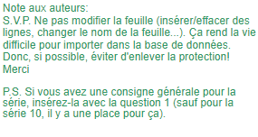
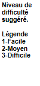

| Saison #24 - Troisième série de Questionnaires | |||
| Numéro de Questionnaire | 16 | ||
| Date de création : | Mars 2026 | ||
| Auteur(s) : | 12e meilleurs | ||
| Équipe de(s) l’auteur(s) : | 12e meilleurs | ||
| Date des parties : | 18 mars 2026 | ||
| Partie 1 | Érudits en gerbe VS Méthos précieux | ||
| Partie 2 | Bons Perdants VS Herbizarres | ||
| Série 1 | Langue | ||
| Individuelle | Scrabble à 6 lettres | ||
| Rédiger 8 questions de niveaux faciles et constants. | |||
| Équipe A | |||
| 1 | 1 | Trouvez le mot à partir des lettres du mot LANGUE. Ne pas tenir compte des accents. En 6 lettres, étendue d'eau de mer, comprise entre la terre ferme et un cordon littoral. |
Lagune |
| 1 | 2 | 4 lettres, qui est de même quantité, dimension, nature, qualité ou valeur. | Égal |
| 1 | 3 | 4 lettres, satellite naturel de la Terre. | Lune |
| 1 | 4 | 3 lettres, congélation des eaux ou arrêt, blocage d'une activité politique ou économique. | Gel |
| Équipe B | |||
| 1 | 5 | 5 lettres, figure formée par deux lignes ou deux surfaces qui se coupent, mesurée en degrés. | Angle |
| 1 | 6 | 4 lettres, grand cerf des pays du Nord ou impulsion qu'on se donne avant un saut. | Élan |
| 1 | 7 | 4 lettres, méthode qui permet de se mouvoir dans l'eau. | Nage |
| 1 | 8 | 3 lettres, qui est sans existence, se réduit à rien, à zéro. | Nul |
| Série 2 | Géographie | ||
| Collective | |||
| Les 5 questions doivent couvrir l'ensemble du thème. Varier les sujets, formulations, longueurs, difficultés, etc. | |||
| 1 à 3 | 1 | Comment se nomme la rivière qui sépare la ville canadienne de Windsor de la ville américaine de Détroit? | Rivière Détroit |
| 1 à 3 | 2 | Quel pays d’Amérique du Sud a la plus grande superficie? | Brésil |
| 1 à 3 | 3 | Quelle île norvégienne a la particularité d’être située dans l’hémisphère Sud? | Île Bouvet ou Bouvetøya |
| 1 à 3 | 4 | Quelle est la capitale de l’état australien de l’Australie-Méridionale? | Adelaide |
| 1 à 3 | 5 | Après l’île de Montréal, quelle est la deuxième île la plus peuplée du Québec? | Île Jésus |
| Série 3 | Cinéma et télévision | ||
| Collective | |||
| Les 5 questions doivent couvrir l'ensemble des thèmes. Varier les sujets, formulations, longueurs, difficultés, etc. | |||
| 1 à 3 | 1 | Quelle série télévisée québécoise mettant en vedette Guylaine Tremblay prenait place dans la prison pour femme fictive de Lietteville? | Unité 9 |
| 1 à 3 | 2 | Quel cinéaste québécois, mort dans un écrasement d’avion en 1997, est reconnu pour ses films Un zoo la nuit et Léolo? | Jean-Claude Lauzon |
| 1 à 3 | 3 | Quel documentaire américain de 1989 montre les répercussions des pertes d’emploi dans l’industrie automobile sur la ville de Flint au Michigan? | Roger et moi (Roger and me) |
| 1 à 3 | 4 | Quelle comédienne britannique incarnait la reine Elizabeth II dans les saisons 3 et 4 de la série télévisée The Crown? | Olivia Colman |
| 1 à 3 | 5 | Quel film québécois de 1952 fondé sur une histoire vraie raconte les sévices subis par Aurore Gagnon? | La Petite Aurore, l'enfant martyre |
| Série 4 | Histoire et société | ||
| Collective | |||
| Au moins 2 questions dans chacun des thèmes. | |||
| 1 à 3 | 1 | Quel empereur romain a légalisé le christianisme dans l’Empire romain par l’édit de Milan en 313? | Constantin Ier (Constantin le Grand) |
| 1 à 3 | 2 | Comment appelle-t-on la hausse généralisée et durable du niveau des prix des biens et services dans une économie? | Inflation |
| 1 à 3 | 3 | Selon le principe de la séparation des pouvoirs, quels sont les trois pouvoirs qui doivent être exercés par des institutions distinctes dans un régime démocratique? | Exécutif, législatif et judiciaire |
| 1 à 3 | 4 | Selon la définition utilisée par Statistique Canada, entre quelles années inclusivement sont nés les baby-boomers au Canada? | 1946 à 1965 |
| 1 à 3 | 5 | Quel explorateur français a exploré le Mississippi jusqu’au golfe du Mexique en 1682 et revendiqué le bassin du fleuve au nom de la France sous le nom de Louisiane? | René-Robert Cavelier de La Salle |
| Série 5 | Une année, décennie ou siècle | ||
| Contrôle | Ier siècle (ap J.-C.) | ||
| Choisir une année (décennie ou siècle pour les époques plus anciennes) et poser 5 questions relatives à cette période. Les questions doivent être diversifiées, sports, politiques, arts, etc. La première question vaut 5 points. | |||
| 1 ou 2 | 1 | Quel empereur romain ayant régné de 54 à 68 aurait joué de la lyre et chanté pendant le grand incendie de Rome en 64? | Néron |
| 2 ou 3 | 2 | Publiée vers 77, quel est le titre de l'œuvre en prose de 37 livres de Pline l'Ancien où il compile le plus grand nombre possible d’informations et de culture générale indispensables à l’homme romain cultivé? | Histoire naturelle |
| 2 ou 3 | 3 | Quelle reine des Icènes déclencha un soulèvement contre l'occupation romaine, pillant et brûlant plusieurs villes dont Camulodunum et Londinium? | Boudica (accepter Boadicée) |
| 2 ou 3 | 4 | Quel fabuliste latin racontant des histoires d’animaux a grandement influencé l'oeuvre de Jean de La Fontaine des siècles plus tard et porte le même nom qu'une tragédie en cinq actes de Racine? | Phèdre |
| 2 ou 3 | 5 | D'après l'évangile selon Matthieu, pour combien de pièces d'argent ou deniers Judas a-t-il trahi Jésus? | 30 |
| Série 6 | #RÉF ! | ||
| Les 4 V | Scrabble à 6 lettres - Deuxième partie | ||
| Une bonne réponse élimine le joueur pour la série. Si tous les joueurs d'une équipe ont une bonne réponse, la série se poursuit en collectives pour 5 points. | |||
| 1 | 1 | Trouvez le mot à partir des lettres du mot LANGUE. Ne pas tenir compte des accents. 4 ou 5 lettres, arbre du bord des eaux, voisin du bouleau. |
Aulne ou Aune |
| 1 | 2 | 5 lettres, carré de laine ou de coton dont on emmaillotait un bébé. | Lange |
| 1 | 3 | 5 lettres, plante aquatique à chlorophylle des eaux douces ou salées. | Algue |
| 1 | 4 | 4 lettres, être spirituel, intermédiaire entre Dieu et les croyants. | Ange |
| 1 | 5 | 3 lettres, temps écoulé depuis qu'une personne est en vie. | Âge |
| 1 | 6 | 3 lettres, personne désignée à une fonction ou une responsabilité par le biais d'un vote. | Élu |
| 1 | 7 | 3 lettres, mammifère domestique, plus petit que le cheval, à longues oreilles, à robe généralement grise. | Âne |
| 1 | 8 | 2 ou 3 lettres, adjectif qualifiant une personne ou une partie du corps sans vêtements. | Nue ou Nu |
| Série 7 | Arts et littérature | ||
| Collective | |||
| Au moins 2 questions dans chacun des thèmes. | |||
| 1 à 3 | 1 | Quel auteur américain est derrière les romans à succès Anges et Démons, le Code de Vinci, et Inferno? | Daniel (Dan) Gerhard Brown |
| 1 à 3 | 2 | De quel pays était originaire la première personne non-européenne à remporter le prestigieux prix Goncourt? | Canada (Antonine Maillet en 1979) |
| 1 à 3 | 3 | Quelle sculptrice française, dont les œuvres peuvent entre autres être admirées à Ottawa, Londres et Bilbao, est reconnue pour ses sculptures d’araignées monumentales? | Louise Bourgeois |
| 1 à 3 | 4 | Quel musée bostonnais a pour spécialité d’exposer des œuvres d’art questionnables, de mauvais goût ou de piètre qualité? | Museum of Bad Art (MOBA) |
| 1 à 3 | 5 | Quelle bédéiste franco-iranienne est l’autrice de la série de romans graphiques Persepolis? | Marjane Satrapi |
| Série 8 | Sports et loisirs | ||
| Collective | |||
| Au moins 2 questions dans chacun des thèmes. | |||
| 1 à 3 | 1 | À ce jour, qui est le seul joueur intronisé au Temple de la renomée du baseball à avoir une casquette des Blue Jays sur sa plaque? | Roberto Alomar |
| 1 à 3 | 2 | À Donjons et Dragons, combien de faces a le dé le plus souvent utilisé dans les jets d'attaque et d'habileté? | 20 |
| 1 à 3 | 3 | Quel athlète représentant le Canada a remporté le plus de médailles au Jeux olympiques d'hiver de 2026 à Milan-Cortina? | Courtney Sarault (2 argent et 2 bronze) |
| 1 à 3 | 4 | À quel sport associez-vous les noms de Gilles Buissières, Jocelyn Noël et Carl Carmoni? | Mini-putt (accepter mini-golf ou golf miniature) |
| 1 à 3 | 5 | Quel personnage fictif de jeu vidéo accompagne Mario et Luigi et a la forme d'un dinosaure le plus souvent vert et blanc? | Yoshi |
| Série 9 | #RÉF ! | ||
| Question à indice | |||
| Dès le 1er indice, il ne doit pas y avoir plusieurs réponses possibles. Le premier indice devrait être très difficile! | |||
| 3 | 1 | Film sorti en 1976 dont la musique a été composée par Gérard Calvi. | |
| 2 | 2 | Un classique de Ciné-cadeau, on y retrouve les voix de Jacques Morel, Pierre Tornade et Roger Carel. | |
| 1 | 3 | Astéix et Obélix y affrontent tour à tour Mérinos, Kermès, Cylindric, les prêtresses de l'Île du plaisir, Iris, Mannekenpix, la Bête, la maison qui rend fou, des crocodiles, le vénérable du sommet, la plaine des Trépassés et les jeux du cirque. | Les Douze Travaux d'Astérix |
| Série 10 | #RÉF ! | ||
| Vis-à-vis | |||
| Il est normal que ces 4 questions soient parmi les plus faciles du questionnaire | |||
| 1 | 1 | Aussi connu sous les noms de Qogir Feng, Chogori, Kechu et historiquement mont Godwin-Austen, quel est le deuxième sommet du monde après l'Everest? | K2 |
| 1 | 2 | Quel fleuve a le plus grand débit au monde avec plus de 200 000 m3 / s ? | Amazone |
| 1 | 3 | Entre quels deux Grands Lacs se trouvent les chutes du Niagara? | Érié et Ontario |
| 1 | 4 | En excluant les déserts polaires, quel est le deuxième désert en superficie après le Sahara et s'étend du Yémen à la Jordanie et l'Irak? | Désert d'Arabie |
| Série 11 | Musique | ||
| Collective | |||
| Les 5 questions doivent couvrir l'ensemble du thème. Varier les sujets, formulations, longueurs, difficultés, etc. | |||
| 1 à 3 | 1 | Quel compositeur français du XIXᵉ siècle a écrit la Symphonie fantastique, œuvre programmatique décrivant les hallucinations d’un artiste amoureux? | Hector Berlioz |
| 1 à 3 | 2 | Quel duo de rock expérimental originaire de Saguenay formé des membres Khn et Klek a récemment acquis une notoriété internationale? | Angine de poitrine |
| 1 à 3 | 3 | Comment appelle-t-on l’intervalle qui sépare deux notes portant le même nom mais situées à des hauteurs différentes? | Octave |
| 1 à 3 | 4 | Quel chanteur et compositeur français est l’auteur de l’album Fantaisie militaire paru en 1998, qui comprend notamment la chanson La nuit je mens? | Alain Bashung |
| 1 à 3 | 5 | Quel groupe américain formé à New York par Lou Reed et John Cale a lancé en 1967 un album avec une pochette conçue par Andy Warhol? | The Velvet Underground |
| Série 12 | Sciences | ||
| Collective | |||
| Les 5 questions doivent couvrir l'ensemble du thème. Varier les sujets, formulations, longueurs, difficultés, etc. | |||
| 1 à 3 | 1 | Quel phénomène optique explique la décomposition de la lumière blanche par un prisme? | Dispersion |
| 1 à 3 | 2 | Quel est le nom du point d’une orbite planétaire où un objet est le plus proche du Soleil? | Périhélie |
| 1 à 3 | 3 | Quel minéral, composé principalement de dioxyde de silicium, est l’un des plus abondants dans la croûte terrestre et est notamment utilisé en horlogerie, et pour des comptoirs durables? | Quartz |
| 1 à 3 | 4 | Quel type de vaisseaux sanguins est le principal site des échanges de gaz et de nutriments entre le sang et les tissus? | Capillaires |
| 1 à 3 | 5 | Quel théorème affirme qu’il existe une infinité de nombres premiers? | Théorème d’Euclide |
| Série 13 | Libre | ||
| Choix d'associations | |||
| Deux séries d'associations de 4 éléments. L'inconnue correctement identifiée et bien associée vaut 20 points, les autres bonnes associations valent 10 points chacune. | |||
| Sous-thème 1 (doit être précis et non relié au sous-thème 2) | Personnages obscurs de bande dessinnée | ||
| Associez les personnages à leur série | |||
| 1 à 3 | 1 | Caténaire, John Helena, Itoh Kata, Général Schmetterling | B |
| 1 à 3 | 2 | Docteur Krollspell, Colonel Sponsz, Tharkey, Wronzoff | C |
| 1 à 3 | 3 | Edgar Aubin Gavial, Jules Larjan-Content, André Pugnan-Lodyeu, Général Samuel S. Surrender | A |
| 1 à 3 | 4 | Waldo Badmington, Elliot Belt, Entrecote Harry, Docteur Aldous Smith | D - Lucky Luke |
| A | Achille Talon | ||
| B | Spirou et Fantasio | ||
| C | Tintin | ||
| D | Inconnu | ||
| Sous-thème 2 (doit être précis et non relié au sous-thème 1) | Moments scientifiques marquants du XIXe siècle | ||
| Associez l'événement à son année | |||
| 1 à 3 | 1 | Parution de l'Origine des espèces de Charles Darwin | D - 1859 (1857 à 1861) |
| 1 à 3 | 2 | Thomas Edison dépose le brevet du phonographe | B |
| 1 à 3 | 3 | Parution de l'article Recherches sur des hybrides végétaux de Gregor Mendel | A |
| 1 à 3 | 4 | Premiers essais humains du vaccin contre la rage de Louis Pasteur | C |
| A | 1866 | ||
| B | 1877 | ||
| C | 1885 | ||
| D | Inconnu (à deux ans près) | ||
| Série 14 | Divers | ||
| Questions Éclair | |||
| Viser des questions courtes couvrant un maximum de thèmes différents. | |||
| 1 ou 2 | 1 | Comment se nomme la plus grande lune de Pluton? | Charon |
| 1 ou 2 | 2 | Quel traité de 1713 a mis fin à la guerre de Succession d’Espagne? | Le traité d’Utrecht |
| 1 ou 2 | 3 | Combien de centilitres compte un litre? | 100 |
| 1 ou 2 | 4 | Quel peintre néerlandais a peint La ronde de nuit? | Rembrandt Harmenszoon van Rijn |
| 1 ou 2 | 5 | Comment se nomme la rivière qui traverse le centre-ville de London en Ontario? | Thames (refuer Tamise qui ne coule qu'à Londres en Angleterre) |
| 1 ou 2 | 6 | Dans quel sport se déroule le Tournoi des Six Nations? | Rugby |
| 1 ou 2 | 7 | Qui est le réalisateur et acteur principal du film de 1941 Citizen Kane? | Orson Welles |
| 1 ou 2 | 8 | Comment appelle-t-on un vote direct de la population sur une question précise? | Référendum |
| 1 ou 2 | 9 | Quels deux pays se sont affronté en finale de la Coupe d’Afrique des nations de football 2025? | Maroc et Sénégal |
| 1 ou 2 | 10 | Quelle capitale européenne est traversée par la Vltava? | Prague |
| Série 15 | Actualité | ||
| Question prime | |||
| Poser une question demandant une réponse simple, pour éviter les ambiguïtés. | |||
| 1 à 3 | 1 | Qui est le guide suprême de la Révolution islamique d’Iran depuis le 8 mars 2026? | Mojtaba Hosseini Khamenei |

